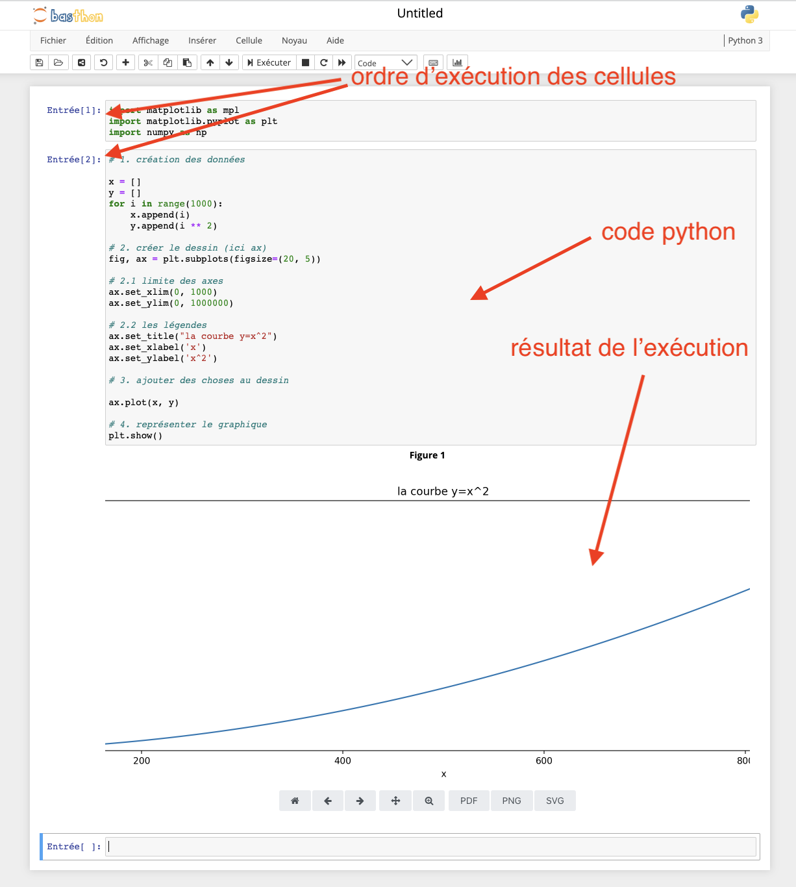

Bases de python : module matplotlib
Auteurs :Nous allons dans ce cours présenter un module très utilisé en python pour représenter ds graphiques : https://matplotlib.org/.
écrire du code avec matplotlib
Pour cette partie du cours nous aurons besoin de plus que la console. Il faudra en effet exécuter plusieurs lignes de python à la suite. Nous allons utiliser un notebook pour cela.
Allez à https://basthon.fr/ et ouvrez un nouveau notebook.
Une fois le notebook ouvert, on pourra écrire plusieurs lignes dans une cellule avant de l’exécuter.
Si vous utilisez un notebook depuis https://basthon.fr/ ou depuis la distribution anaconda, matplotlib devrait être installé, sinon, il vous faudra l’installer (
python -m pip install matplotlib).
Commençons par importer les bibliothèques dans la première cellule :
- copier/coller le code ci-dessous dans la première cellule de votre notebook
- exécutez la cellule
import matplotlib as mpl
import matplotlib.pyplot as plt
import numpy as np
Vous devriez arriver à quelque chose du genre :

un premier graphique
matplotlib peut être une bibliothèque difficile à utiliser. Pour que tout se passe au mieux, on va toujours utiliser la même procédure :
- on crée les données à représenter
- créer le graphique avec matplotlib :
fig, ax = plt.subplots(figsize=(20, 5)) - ajouter des choses au dessin : plusieurs commandes ajoutant des choses au dessin, c’est à dire
ax - représenter la figure (commande
plt.show()) ou la sauver dans un fichier
Le code suivant permet de représenter la courbe $y=x^2$ :
# 1. création des données
x = []
y = []
for i in range(1000):
x.append(i)
y.append(i ** 2)
# 2. créer le dessin (ici ax)
fig, ax = plt.subplots(figsize=(20, 5))
# 2.1 limite des axes
ax.set_xlim(0, 1000)
ax.set_ylim(0, 1000000)
# 2.2 les légendes
ax.set_title("la courbe y=x^2")
ax.set_xlabel('x')
ax.set_ylabel('x^2')
# 3. ajouter des choses au dessin
ax.plot(x, y)
# 4. représenter le graphique
plt.show()
Copiez/coller le code précédent dans le notebook et exécutez la cellule
Vous devriez arriver à quelque chose du genre :

Essayons de comprendre comment tout ça fonctionne :
- la partie 1 crée deux listes,
xetyqui vont représentez les points $(x[i], y[i])$ à représenter - la première ligne de la partie 2 crée les objets matplotlib sur lesquelles tracer les courbes.
- On utilise ici
axqui représente un dessin de 20 unités sur 5. - on peut paramétrer l’objet
axpour limiter le graphique (par défaut, le dessin prendra la taille de ce qui est dessiné)
- On utilise ici
- la troisième partie dessine nos points (reliés par des segments) sur l’objet
ax - enfin, on représente l’objet
axà l’écran.
Changez la taille de l’objet
axpour voir les différences de représentation
Changez la courbe pour représenter $y = \frac{1}{2}x^2$
Superposez les 2 courbes
x = []
y = []
y2 = []
for i in range(1000):
x.append(i)
y.append(i ** 2)
y2.append(.5 * i ** 2)
fig, ax = plt.subplots(figsize=(20, 5))
ax.set_xlim(0, 1000)
ax.set_ylim(0, 1000000)
ax.set_title("les courbes y=x^2 et y=.5 * x^2")
ax.set_xlabel('x')
ax.set_ylabel('x^2')
ax.plot(x, y)
ax.plot(x, y2)
plt.show()